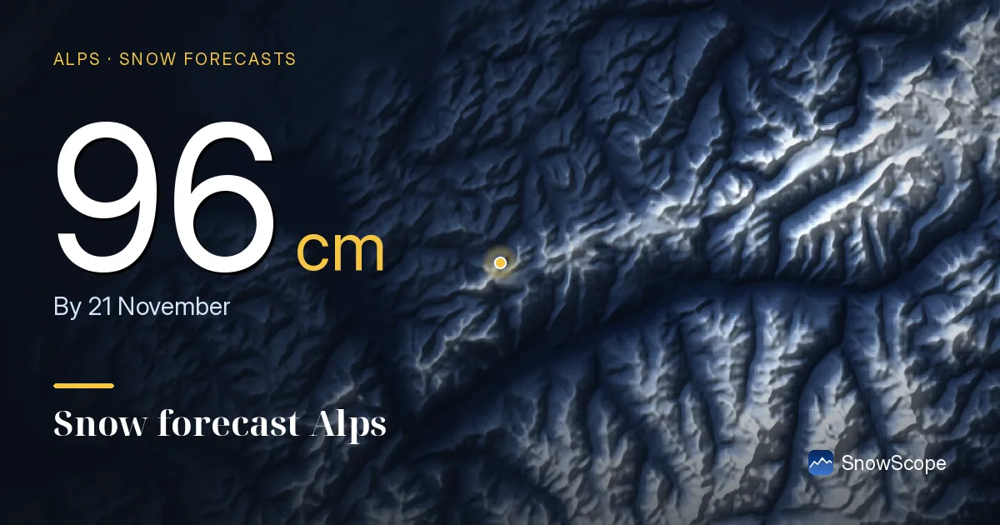
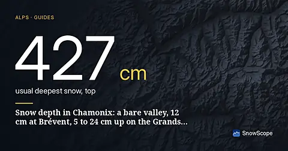

Snow forecast Alps: 96 cm by 21 November
Three days of heavy snow are coming to the Alps. Orelle will see the most: 110 cm by 21 November, with the heaviest falls on Thursday 19 and Friday 20 November. The forecast also shows 105 cm at Les Grands Montets and 104 cm at La Grave, though timing and totals can shift—check the map again before you travel.
See the live snow forecast for Glacier 3000 in the SnowScope appSnow depth, powder alerts and the 3D map, free.
Which height gets snow, which stays dry
Height decides everything right now. At Orelle, the top (3,221 m) already holds 82 cm and will gain 122 cm more over the next week. At mid-mountain (2,779 m) the snowpack is thinner—48 cm today—but 110 cm of new snow is coming. The base (2,338 m) has only 21 cm and will add 96 cm.
Les Grands Montets shows an even steeper split. The summit (2,768 m) has 44 cm now and will collect 133 cm. Mid-mountain (2,001 m) sits at 12 cm, with 99 cm forecast. The base (1,234 m) has nothing yet—just 21 cm expected by late next week.
In early November, this height gap matters for how long snow lasts. Wet snow at the base melts fast; powder at the top stays cold and dry longer.
| Resort | Snow depth | New snow, 72 h | Coming, next days | Top |
|---|---|---|---|---|
| Orelle | 111 cm | 86 cm | 110 cm | 3,221 m |
| Les Grands Montets | 60 cm | 82 cm | 105 cm | 2,768 m |
| La Grave | 105 cm | 77 cm | 104 cm | 3,543 m |
| Courmayeur | 45 cm | 74 cm | 96 cm | 2,749 m |
| Glacier 3000 | 52 cm | 77 cm | 96 cm | 2,931 m |

When the storms arrive
Wednesday 18 November is already here: 34 cm at Orelle, 29 cm at Les Grands Montets. Thursday 19 November brings the first big push: 50 cm at Orelle, 42 cm at Les Grands Montets. Friday 20 November is the heaviest day: 52 cm at Orelle, 53 cm at Les Grands Montets.
Saturday 21 November turns lighter—just 8 cm at Orelle, 10 cm at Les Grands Montets—so the best powder skiing will be Friday afternoon and all day Saturday morning before the sun softens it.
Wet snow risk: watch the freezing level
New snow is not all powder. On Thursday 19 November at Orelle, the freezing level climbs from 2,390 m to 2,780 m. That means wet, heavy snow below 2,780 m and lighter snow above. Ski as high as you can that day.
Les Grands Montets faces tougher conditions: the freezing level stays low, between 1,920 m and 2,270 m on Thursday. Only the upper slopes will get dry snow; lower runs will be sticky.
By Friday 20 November, La Grave warms up further, with the freezing level reaching 3,210 m—most of the resort will see wet snow. Saturday is colder and will reset conditions.
How this week compares with November history
At mid-mountain (2,779 m), Orelle has 36 cm today. The long-term average for mid-November is 58 cm, so conditions are thinner than normal. But this is deeper than the same date in 15 of the 46 past winters we have data for.
Courmayeur shows the opposite pattern: at mid-height (1,976 m) it has 33 cm today versus a November average of 22 cm. This resort is running ahead of its usual rhythm—32 of past 46 Novembers were shallower on this date.
What to pack and where to go
Bring both wax types. Thursday and Friday mornings, the high slopes at Orelle and Les Grands Montets will offer powder. By Friday afternoon, wet snow becomes common below 2,500 m.
If you want to ski early Friday (before the sun), Orelle's top and La Grave's high terrain will be best. If you go Saturday, choose high elevations again; the base areas may turn to slush by mid-morning.
Tips for skiers
- Thursday and Friday are the peak snow days. Plan your trip for those dates if possible, especially for high-altitude terrain.
- Freezing level above 2,780 m on Thursday at Orelle means wet snow at mid-mountain. Ski the top first thing Friday morning to find dry powder.
- At Les Grands Montets, stay above 2,270 m on Thursday and Friday to avoid heavy wet snow lower down.
- Fresh snow at this season is thin in places and may hide rocks. Watch your line and stay alert, especially on runs you don't know.
- Before you ski off-piste or go touring, check the official avalanche bulletin for your area and your resort's avalanche forecast.
- Forecasts shift. Look at the map again on Wednesday evening to confirm timing before you pack Thursday morning.
About these numbers
Resort snow depths are the deepest snow on the resort's upper slopes on the date shown; they are estimates for an area, not a measurement at one point. Forecasts can change. Always read the official avalanche bulletin before going off-piste.
Official avalanche bulletins: EAWS (Alps)
Cite this report
For research, teaching or the press: the numbers and charts are free to reuse under CC BY 4.0 with this citation.
SnowScope (2026), Snow forecast Alps: 96 cm by 21 November, https://snowscope.app/blog/en/2026/11/alps-glacier-3000-snow-forecast-18-november-2026.html, accessed 2026-11-18
SnowScope (Atlas Labs). (2026, November 18). Snow forecast Alps: 96 cm by 21 November. SnowScope snow reports. https://snowscope.app/blog/en/2026/11/alps-glacier-3000-snow-forecast-18-november-2026.html
BibTeX
@misc{snowscope2026alpsglacier3000snowforec,
author = {{SnowScope (Atlas Labs)}},
title = {Snow forecast Alps: 96 cm by 21 November},
year = {2026},
month = nov,
howpublished = {\url{https://snowscope.app/blog/en/2026/11/alps-glacier-3000-snow-forecast-18-november-2026.html}},
note = {Published 2026-11-18 10:47 UTC; accessed 2026-11-18}
}· CC BY 4.0 · Methods, data and tools →
Glacier 3000: snow and temperature by height, this winter vs last (tools) →
Follow Glacier 3000
Free: a message when fresh snow is coming, and the forecast every morning.
More snow reports

Snow depth in Chamonix on 13 November 2026, height by height: nothing on the valley floor, 1 cm at 2001 m, 12 cm at the top of Brévent-Flégère (2486 m), 5 to 24 cm at the top of the Grands Montets (2768 m). About a metre forecast up high this week, rain in the valley. How deep Chamonix usually gets, from 46 winters.

What is true about La Grave, the off-piste mountain under La Meije: terrain, safety, snow by month and the trend, from 46 past winters.

How to spend a first day skiing in Chamonix, from the Grands Montets above Argentière to the right hour for each slope, with 46 winters of snow data.